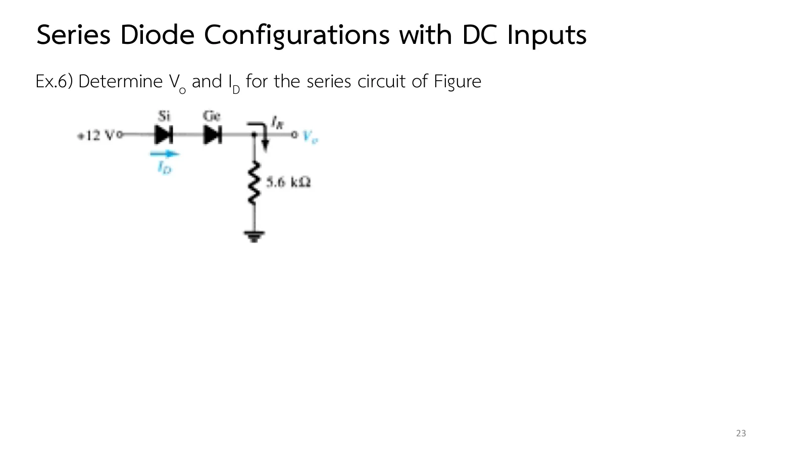
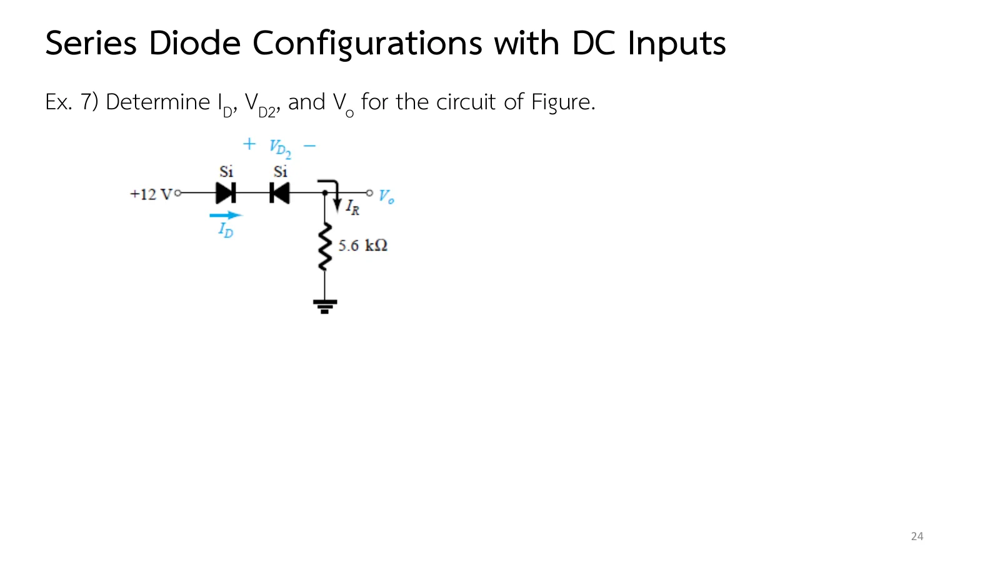

Slides pp. 23–25 apply the procedure of page 2.2 to busier series loops: two diodes in series, one of them turned the wrong way, and a circuit with two supplies, one of them negative. This page has two series diodes whose material and direction you can change (section A), Ex.6–Ex.8, and more practice.
Diodes in series must all conduct for any current; each conducting diode takes its own \(V_K\) off the supply (Ex.6).
One diode the wrong way opens the whole loop: a short in series with an open circuit is always an open circuit. No current flows, that diode takes the whole voltage, and a diode pointing the right way but carrying no current has no voltage (the no-bias condition) (Ex.7).
A supply given as a voltage to ground, such as −5 V, is drawn as a source tied to ground to close the loop before Kirchhoff's voltage law is applied; supplies pushing the same way add (Ex.8).
The voltage of a point with respect to ground follows from walking there from ground along any path, adding the rises and subtracting the drops (Ex.8).
A
ไดโอดสองตัวอนุกรม: เลือกวัสดุและทิศ
Two diodes in series: pick the material and the direction
สไลด์หน้า 23–24 · Boylestad หัวข้อ 2.4
Slides pp. 23–24 · Boylestad, section 2.4
แหล่งจ่าย E ไดโอด D1 และ D2 และ R = 5.6 kΩ ต่ออนุกรมกันแบบเดียวกับ Ex.6 เลือกวัสดุของไดโอดแต่ละตัว กลับทิศ D2 และเลื่อน E แล้วดูแท่งแรงดันรอบวงในแผงข้างภาพ ไดโอดใช้แบบจำลองโดยประมาณของตาราง 2.1
A source E, diodes D1 and D2, and R = 5.6 kΩ in series, as in Ex.6. Pick each diode's material, turn D2 round and move E, and watch the loop voltages in the side panel. The diodes follow the approximate models of Table 2.1.
1
Ex.6: ไดโอดซิลิคอนกับเจอร์เมเนียมอนุกรมกัน
Ex.6: a silicon and a germanium diode in series
สไลด์หน้า 23 · ตัวอย่างจากตำราฉบับก่อน (ฉบับที่ 11 Example 2.7 ใช้ไดโอดเปล่งแสงสีแดงแทนเจอร์เมเนียม)
Slide p. 23 · an example from an earlier edition (the 11th edition's Example 2.7 uses a red LED instead of germanium)

สไลด์หน้า 23: Ex.6 · แตะรูปเพื่อขยายSlide p. 23: Ex.6 · tap to enlarge
A +12 V supply feeds a silicon and a germanium diode, both pointing the same way, to the output node \(V_o\), which has a 5.6 kΩ resistor to ground. Determine \(V_o\) and \(I_D\).
ภาพจำลองวาดแหล่งจ่าย +12 V เป็นแบตเตอรีที่ต่อกราวด์ ขั้นที่ 2 แทนไดโอดทั้งสองด้วยแบตเตอรีของตาราง 2.1 ลองตอบก่อน
The simulation draws the +12 V supply as a battery to ground; step 2 puts the batteries of Table 2.1 in place of the diodes. Try it first.
2
Ex.7: ไดโอดสองตัวหันสวนกัน
Ex.7: two diodes facing each other
สไลด์หน้า 24 · Boylestad Example 2.8 (ตำราใช้ +20 V)
Slide p. 24 · Boylestad Example 2.8 (the book uses +20 V)

สไลด์หน้า 24: Ex.7 · แตะรูปเพื่อขยายSlide p. 24: Ex.7 · tap to enlarge
The point \(E_1\) is at +10 V to ground; it feeds \(R_1\) = 4.7 kΩ and a silicon diode to the output node \(V_o\), which continues through \(R_2\) = 2.2 kΩ to the point \(E_2\) at −5 V to ground. Determine \(I\), \(V_1\), \(V_2\) and \(V_o\).
In section A choose Si and Ge and lower E slowly: current flows once E passes 1.0 V (0.7 + 0.3); below that both diodes are off.
Make both silicon: they need 1.4 V, and at the same E, \(V_o\) is 0.4 V lower than with Si and Ge.
Turn D2 round: the current vanishes whatever E is; the D2 bar is as long as E and the D1 bar is zero.
Try this 2 — two supplies
Last step of problem 3: walking from ground through \(E_1\), down \(R_1\) and the diode must give the same \(V_o\) as walking through \(E_2\) and \(R_2\).
Hover over the output node in the simulation of problem 3: it is slightly negative; a point between two supplies need not be positive.
Chapter 2 slides, Part I, pp. 23–25 · Boylestad & Nashelsky, 11th ed., section 2.4 (Examples 2.7–2.9)